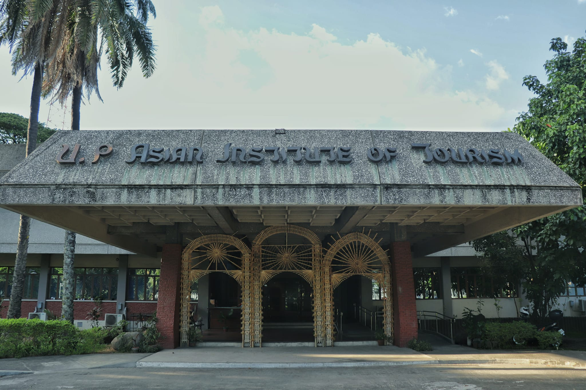

<!DOCTYPE html>
<html lang="en">
<head>
    <meta charset="UTF-8">
    <meta name="viewport" content="width=device-width, initial-scale=1.0">
    <title>University of the Philippines Asian Institute of Tourism</title>
    <link rel="stylesheet" href="index.css">
    <link rel="icon" href="images/icons/AIT.png">
</head>

</html>

<body>
  <header>  
  <br>
  <div class="navbar">
  <div class="navbar-background"></div>
        
  <div class="logo">
  <a href="https://ait.upd.edu.ph" target="_blank">Asian Institute of Tourism</a>
  <a href="https://up.edu.ph"></a>
  <a href="https://ait.upd.edu.ph"></a>
  </div>
  <ul class="links">
  <li> <a href="index.html">Home</a> </li>
  <li> <a href="course.html">Academic Programs</a> </li>
  <li> <a href="Professors.html">Faculty and staff</a> </li>
  <li> <a href="facilities.html">Facilities</a> </li>
  <li> <a href="About.html">About</a> </li>
  <li> <a href="contacts.html">Contact Us</a> </li>
  </ul>

  <a href="https://ait.upd.edu.ph" class="action_btn" target="_blank">APPLY NOW</a>
  </div>
  </header>

  <br>
  <h1>
    University of the Philippines Asian Institute of Tourism 
  </h1>

  <main>
  
  <span class="redline"></span>

  <div class="maincontainer">
  <div class="maintext">
  <div class="subimg">
  
  </div>
  <p>
  The University of the Philippines – Asian Institute of Tourism (AIT) offers higher tourism education 
  courses in the Philippines. AIT is the first school in Southeast Asia to offer a Bachelor of Science 
  degree program in Tourism and graduate courses focused on Tourism Development and Management.
  </p>

  <p>Located at Commonwealth Avenue, AIT is under the administration of the Diliman Campus of the 
  University of the Philippines. The AIT building houses the AIT Library, administrative offices, 
  classrooms, function areas, seminar rooms, and lounge hall for students. Being at the heart of Quezon City 
  - Metro Manila, AIT is within close proximity to numerous parks, museums, heritage sites, business districts, 
  and government offices. Read more about us here.</p>
  </div>
  </div>

  <span class="redline"></span>

        <div class="mvcoinatiner">
          <h1>VISION</h1>
          <p>""A world-class provider of tourism education, research and 
            extension services, driving human resource capital development in the
            Philippines and Southeast Asia."
          <br><br>
            - UP Asian Institute of Tourism</p>

            <h1>MISSION</h1>
             <p>"To develop innovative leaders in tourism development."
            <br><br>
              "To provide relevant education, research, extension services."
            <br><br>
              "To serve the needs of our students, alumni, the tourism industry, government, local communities and other stakeholders, in a manner that optimizes resources."
            <br><br>  
              - UP Asian Institute of Tourism</p>
              <br><br><br><br>
      </div>
        <span class="redline"></span>
  
    <div class="BLEFT">
    <h2> Academic Programs</h2>
    <p>
    Bachelor of Science in Tourism <br>
    Graduate Diploma in Tourism Development and Management & Master of Science in Tourism Development and Management <br>
    Master of Science in Tourism Development and Management
    </p>
    <a href="course.html" class="learn-more-button"> Learn More </a>
    </div>
    </div>

    <br><br><br><br><br><br><br><br><br><br><br><br><br><br><br>
    
      <span class="redline"></span>

    </main>

    <footer id="footer">

      <div class="fcontainer">
    
      <div class="Lfooter-content">
      <h3> UP DILIMAN AIT</h3>
      <ul>
      <li><a href="https://www.facebook.com/UPAIT" target="_blank" class="link1">Official Page</a></li>
      </ul>
      </div>
    
      <div class="Mfooter-content">
      <h3> Telephone Number </h3>
      <ul> UP Asian Institute of Tourism
      <li>Phone: (+63 2) 8 981 8500 extension # 2798</li>
      </ul> 
      </div>
    
      <div class="Rfooter-content">
      <h3> Inquire in our Emails </h3>
                
      </ul>
      <ul> UP Asian Institute of Tourism
      <li>asianinstituteoftourism.upd@up.edu.ph </li>
      </ul>
      </div>
      </div>
          
      <div class="bottombar">
      <p class="bottombarp">
      © ALL RIGHTS RESERVED TO ITS RIGHTFUL OWNERS
      </p>
      </div>
      </footer>
</body>

</html>